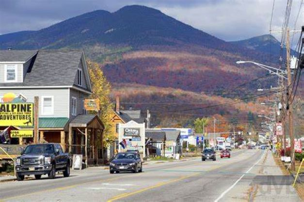

Freshest fish and best oysters on the East Coast.
Multiple bodies of water; from Cape Cod Bay to the Atlantic Ocean to fresh water kettle ponds- a swimmer's dream!
Amazing hiking and bike trails within the National Seashore; make sure to check out the Province Lands around Provincetown!

The perfect launching pad into New Hampshire's White Mountains.
Great for folks of all abilities and interests; from world-class hiking to lazy river days!
Family-friendly and hugely accessible.

The gateway into the Green Mountains and right along the shores of Lake Champlain!
Plenty of wonderful dining options for any budget and occasion.
Artistic and unique, truly a place to visit this summer!